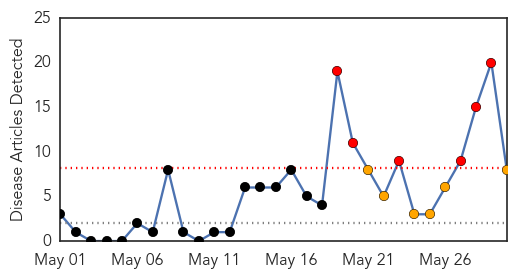
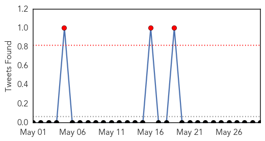
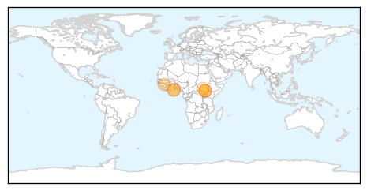

Cholera
30-Day Web Trend
6 alerts, 6 warnings

30-Day Twitter Trend
3 alerts, 0 warnings

Article Locations
Article Confidences
Top Articles:
- 0.995
- A Cholera Vaccine Halts New Cases In A Guinea Epidemic
- 0.967
- Red Alert On Cholera Outbreak
- 0.885
- Cholera cases reported in Yei
- 0.803
- UNICEF South Sudan Humanitarian Situation Report #24, Reporting Period 27 – 03 June 2014 - South Sudan
- 0.792
- South Sudan Crisis Situation Report No. 38 (as of 30 May 2014) - South Sudan
- 0.709
- Sekondi/Takoradi continues to record cholera cases
- 0.619
- Time to Put the Spotlight on South Sudan
- 0.522
- Thirty-two pregnant women test HIV positive in Sunyani West
Top Tweets:
-
No tweets found for May 30, 2014
Influenza
30-Day Web Trend
0 alerts, 0 warnings

30-Day Twitter Trend
0 alerts, 0 warnings

Article Locations

Article Confidences

Top Articles:
Top Tweets:
-
No tweets found for May 30, 2014